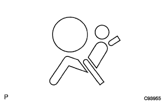

SRS Airbag System Diagnours System |
|  |
When the IG switch is turned on, check whether the warnin gland lamps light or blink.
After about 6 seconds, make sure that the warnin gland will turn off.
After 2 seconds after the IG switch is turned off (lock), the IG switch is turned on to turn on the warning lamp for about 6 seconds and diagnose the airbag pliten shoner system.
In the unlikely event that a defect is found in a primary check, the warnin gland will light or flash after 6 seconds.
When the primary check is completed (the warnin glander is turned off after 6 seconds), the airbag sensor ASSY CTR constantly monitors the system and see if there are any abnormalities in the system.
In the unlikely event that a defect is detected by checking at all times, the airbag sensor ASSY CTR operates as follows.Warnin Grand lamps light or flash.
Warnin Grand lamps light or flash.
Warnin Grand lamp lights up and turns off.
Warnin Grand lamps regular lights.
Warnin Grand lamps become lit.
When the system is normal
Warning glanders light up only during the primary check period (about 6 seconds after turning on the IG switch).
If there is an abnormality in the system
Warning gland lamps turn or flash even after the primary check period.
After the primary check period, it turns off once, and the warnin gland is turned on or flashed again.
If the IG switch is turned on, the airbag warnin group turns off for 10 seconds, and then turns on, the airbag sensor ASSY CTR connector may be half -paired or an abnormality of half a cross -check pin.
Combined meter meter ASSY's defect or communication -based abnormality, etc.
Warnin Grand lamps due to a defect in the power supply system, a combination meter Assassy, or an airback sensor ASSY CTR defect.
The operated airbag sensor ASSY CTR lights the warnin glamp after the primary check period.
| Mechanism name | Applicable connector | |
|---|---|---|
| (a) | Terminal double lock mechanism | Connector (2), (4), (6), (7), (8), (10), (11), (14), (20), (20) |
| (B) | Half -hand inspection mechanism | Connector (1), (2), (3), (4) |
| (C) | Half -match prevention mechanism | Connector (6), (8), (11), (14), (20) |
| (D) | Connector double lock mechanism | Connector (17) |
| (E) | Connector tallock mechanism | Connector (10), (16) |
| (F) | Terminal short mechanism | Connector (2), (4), (9), (12), (13), (15), (19) |
Terminal double lock mechanism
A mechanism that improves terminal holding power and prevents terminal escape.
The connector is a two -piece structure of the housing and spacer, and the terminal is maintained in a lance (primary lock) and a spacer (secondary lock).
Half -hand inspection mechanism
A mechanism that electrically detects whether the connector is connected.
When the connector is completely meta, use a half -joint -check pin that is connected, and connect the sensor input side and the output side in series, and flow the current to the airbag sensor ASSY CTR (computer) and half -square.The state is detected.A slope is set on the inner wall of the connector, and when connecting a connector, the striking check pin is inserted along this.And when the connector is completely inserted, the structure is a structure in which the union check pin comes off from the inclination and contacts the terminal.
Half -match prevention mechanism
A mechanism to prevent the connector half -touch.
If it is not perfectly matched, the spring will pass through the slider, push back the opponent's connector (male), and push the opponent's connector to the point where it is not conducted.
Double lock mechanism of connector
This mechanism has improved the reliability of the connection by locking connectors (male, female) in double.If the primary lock is not performed, the convex portion will not be able to make a secondary lock.
Connector tallock mechanism
A mechanism to prevent connectors from missing out.
By locking the locking button of the connector, the locking button claws are applied to the side groove of the opponent's connector, and the connector is securely connected.
Terminal short mechanism
When the connector is removed, the mechanism that automatically shorts the power of the airbag and the ground terminal.
A short spring plate is provided inside the connector, and the airbag side is closed (no potential difference between both terminals) prevents malfunctions in maintenance work.
Use paper (0.5 mm) equivalent to the terminal to release the connector short mechanism.